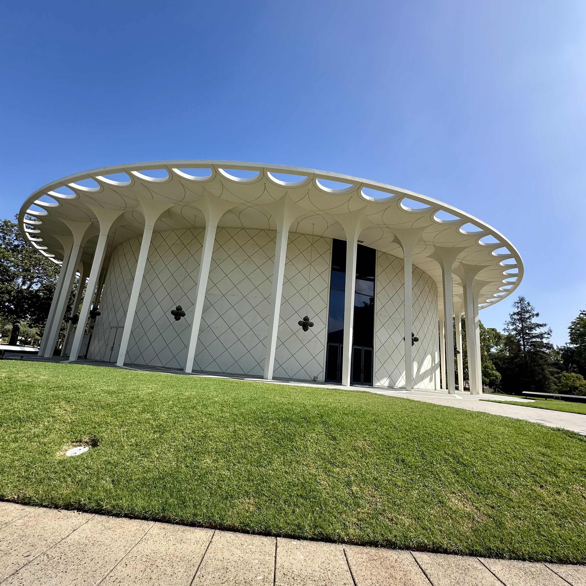
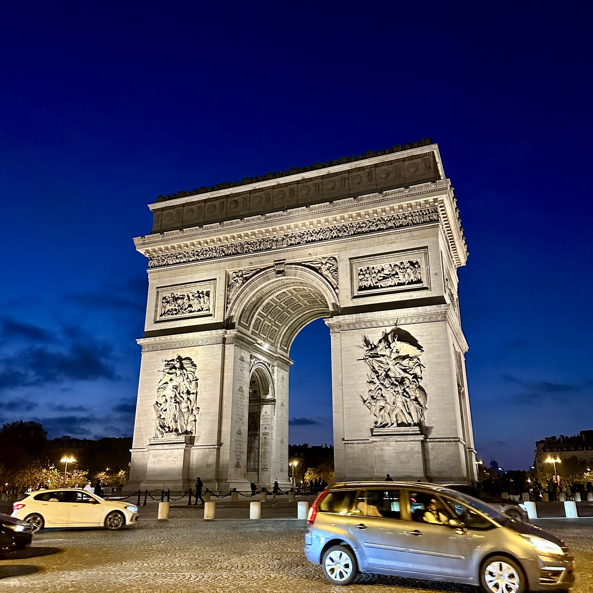
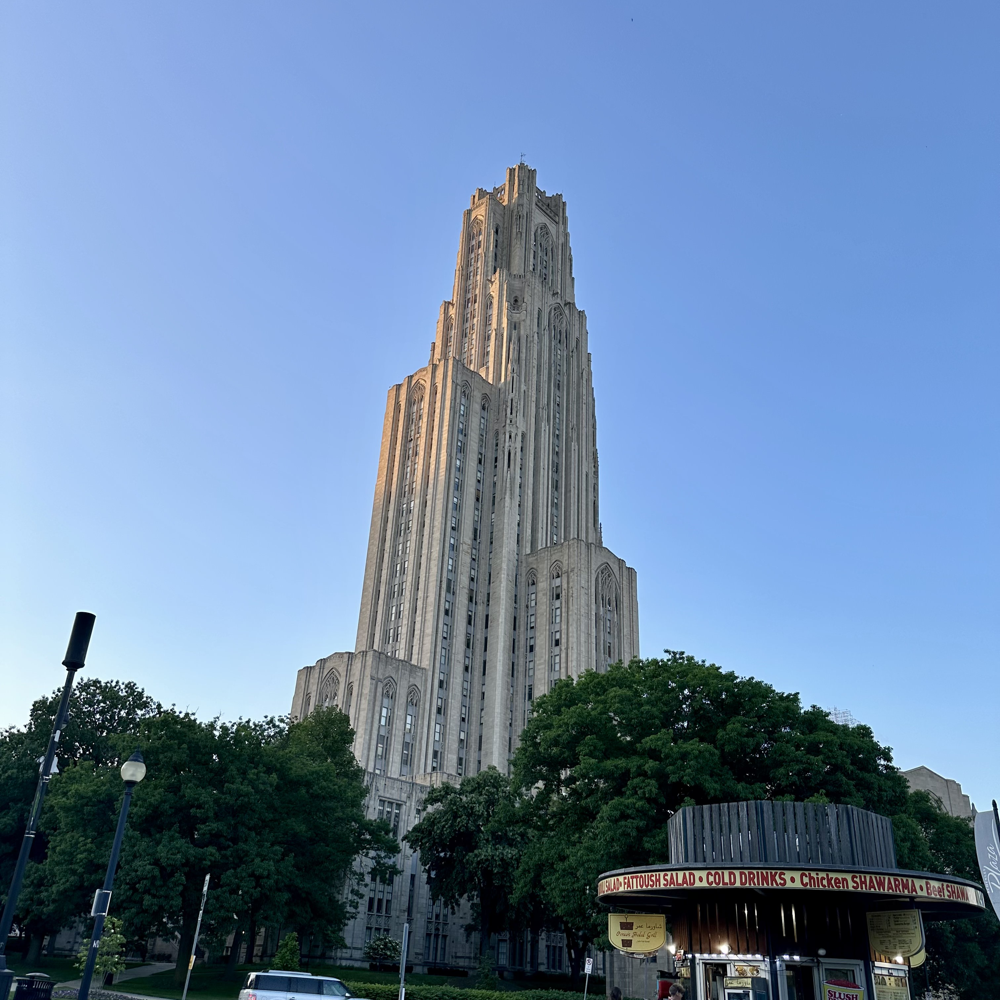

theoretical physicist · hep-ph · ML × HEP
Ian Pang
Postdoctoral Fellow at The University of Alabama & Fermilab
01 about

I am a Postdoctoral Fellow at The University of Alabama and Fermilab, working in particle phenomenology at the intersection of theory, collider data, and machine learning. I received my PhD in physics from Rutgers University in 2026, advised by Prof. David Shih. Before that, I completed the MASt in Applied Mathematics at the University of Cambridge and a BSc in Physics and Mathematics at NTU Singapore, including a research stay at CERN with Prof. John Ellis.
Outside of physics, I play tennis and squash and enjoy exploring new cities and their food.
Fast simulation
Normalizing-flow surrogates for GEANT4 calorimeter showers, and their use in calibration, inference, and anomaly detection.
Jet physics
The fundamental limits of jet tagging, and generative models for precision jet modeling.
Foundation models
Pre-training on large collider datasets, including the open Aspen Open Jets dataset.
AI for physics
Benchmarking and building AI agents that carry out particle-physics analyses.
02 publications
Author lists for some publications are ordered alphabetically.
03 talks





04 teaching & service
// teaching assistant · Dept. of Physics & Astronomy, Rutgers University
- Extended General Physics I — Recitation Spring 2023
- General Physics II — Recitation Fall 2022
- Analytical Physics IIb — Lab Spring 2022
- General Physics I — Lab Fall 2021
// mentoring
- Advait Gupta (undergraduate researcher): uncertainty quantification for ML models in HEP 2025
// refereeing
- Physical Review D · SciPost Physics · JHEP · ACAT 2022 (conference)
05 contact
$ whoami --contact emailypang4@ua.edu inspireinspirehep.net/authors/2170937 githubgithub.com/Ian-Pang whereTuscaloosa, AL · Batavia, IL